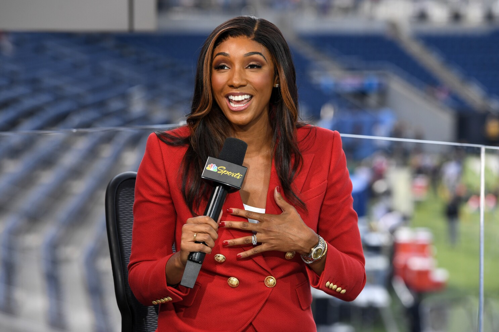
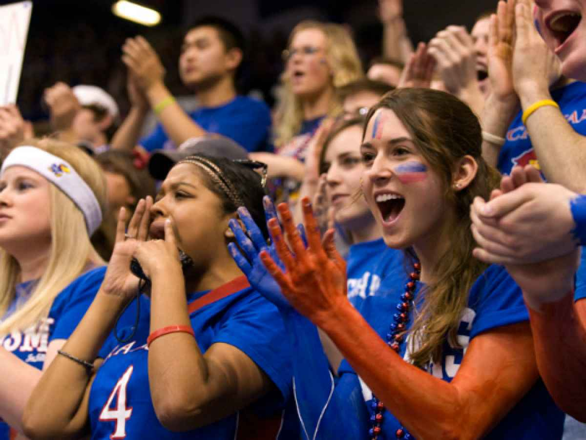

When preparing to conduct my research, I wanted to examine gender bias in sports to better understand exactly what I wanted to answer. I found that the historical and structural foundations of sports are directed at men, specifically that sports institutions were developed as a political enterprise to maintain and promote male power (Anderson, 2009).
For example, ancient Rome's Colosseum was an early venue for modern men's sports, showcasing these male-centered sports spectacles as a form of political and social control. While modern sports do not prioritize male power in their marketing and purpose, it is interesting to see how these early dynamics leave social constructs for years to come.
These early male-centered dynamics in sports spaces have evolved into less severe forms yet still persist in complex ways. Female fans often reside in an "in-between" space where they are never fully accepted by male sports culture nor female peers who conform to these masculine social norms (Elser, 2021).
This is called hegemonic masculinity, where rigid gender expectations subordinate women's participation and expression of various topics (Connell & Messerschmidt, 2005). This hegemonic masculine sports culture is followed by both men and women, whether consciously or subconsciously.
As a result, female fans are often labeled as inauthentic because they do not conform to behaviors common among pre-established male fandoms (Sveinson & Hoeber, 2013). These labels can discourage participation and break down confidence through behaviors like questioning, mansplaining, ignoring, and interrupting.
Female sports journalists also face gender-based harassment. A large-scale analysis of approximately 350,000 social media mentions found that women receive different kinds of hate—targeting their gender, bodies, and sexuality rather than their work (Johnson et al., 2024). This often forces women to work harder than their male counterparts to earn equal respect.


The past has highlighted a range of gender-discriminatory problems in sports spaces. To address this issue, both men and women must reflect on these dynamics and recognize their own biases. The purpose of this research is to do just that.